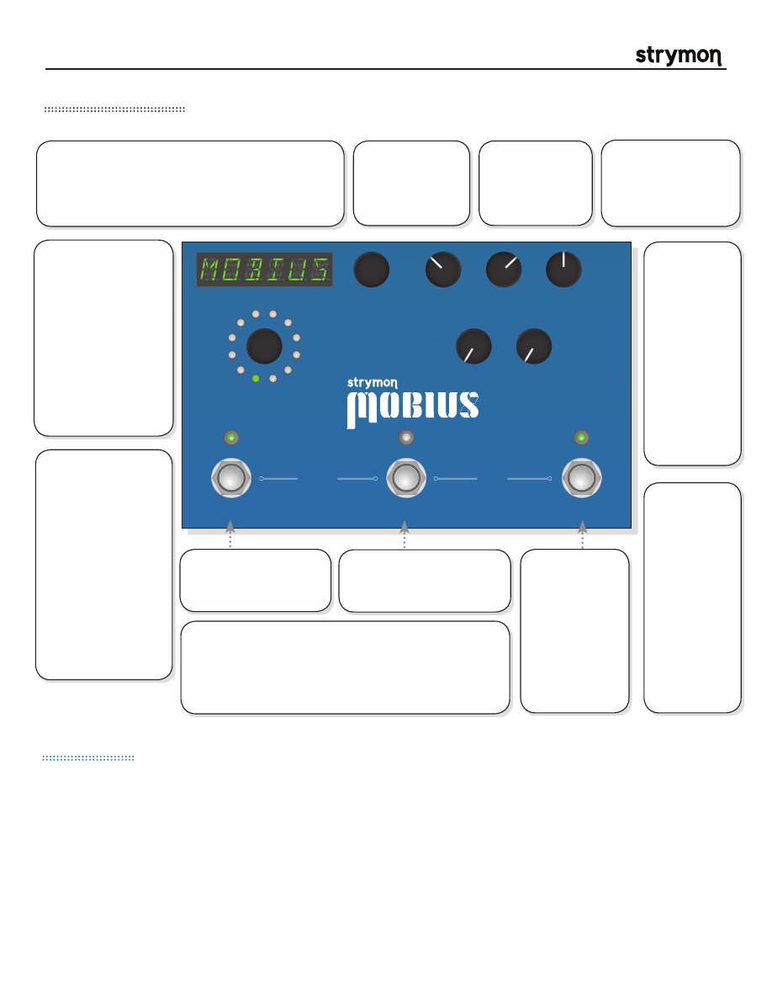

Mobius
-
User Manual
®
pg 2
Front Panel Controls
MOD MACHINES:
CHORUS:
Full featured Chorus with five distinct modes—dBucket, Multi, Vibrato, Detune and Digital.
FLANGER:
Deep and rich Flanger with a wide palette of sonic possibilities. 6 unique flanger algorithms.
ROTARY:
Accurate implementation of a rotary speaker cabinet commonly used with tonewheel organs and guitars.
VIBE:
Recreation of the late ‘60s “vibe” circuit which was one of the first modulation effects of it’s time.
PHASER:
Highly flexible phaser with 2, 4, 6, 8, 12, 16 stage, and barber pole modes. Feedback control and selectable LFO waveforms.
FILTER:
LFO synced filter with three filter types, eight LFO waveshapes and variable resonance.
FORMANT:
Filter type that emulates the human vocal tract and also features selectable LFO waveforms.
VINTAGE TREM:
Three distinctively different classic tremolo sounds from the ‘60s.
PATTERN TREM:
Pattern synced tremolo with user definable patterns and selectable LFO waveforms.
AUTOSWELL:
Auto volume swell triggered by input signal. Rise time and envelope shape are variable. Speed/Depth knobs add chorus.
DESTROYER:
Mangles your audio with bit & sample rate reduction, filters, and vinyl noise. Vinyl warping controlled by Speed/Depth knobs.
QUADRATURE:
Advanced frequency shifter, AM ring modulator, and FM modulator all with selectable LFO waveforms.
TYPE
push (bank/BPM)
hold (save)
push (param)
hold (global)
VALUE
PARAM 1
PARAM 2
B
TAP
A
SPEED
DEPTH
LEVEL
BANK DOWN
BANK UP
FILTER
DESTROYER
VIBE
ROTARY
FLANGER
PHASER
CHORUS
FORMANT
AUTOSWELL
VINTAGE TREM
PATTERN TREM
QUADRATURE
®
VALUE:
Provides fine adjustment of LFO speed when
speed is displayed. Scrolls through presets when bank or
name is displayed.
Push
to access the parameter menu for
the current mod machine.
Hold
to access the global menu.
SPEED:
Provides
coarse adjustment
of LFO speed.
DEPTH:
Sets the
modulation depth
for the current mod
machine.
LEVEL:
Adjusts the
output level from -3dB to
+3dB.
Set to 12 o’clock
for unity gain.
PARAM 1:
Assignable to
the parameters
in the current
mod machine.
To assign the
PARAM 1 knob,
navigate to
the desired
parameter,
press and
hold the value
encoder and
turn the PARAM
1 knob.
PARAM 2:
Assignable to
the parameters
in the current
mod machine.
To assign the
PARAM 2 knob,
navigate to
the desired
parameter,
press and
hold the value
encoder and
turn the PARAM
2 knob.
TYPE:
Selects the
currently active
mod
machine. Push
to toggle
the display between
showing BPM and the
current bank.
Hold
to
save the current preset.
TIP:
If the parameter or
global menu is currently
displayed, push to
exit
and show bank or BPM.
FOOTSWITCH A:
Press to
engage or bypass preset A
of the current bank.
A & B LEDS:
Green
if
active
. Amber if the
preset has been
edited
.
Off if
bypassed
.
TAP LED:
Pulses to
indicate the current LFO
rate. Flashes amber
to indicate that a tap
division is active.
TIP:
To find the knob
positions of a saved
preset, turn each knob
until the LED returns
to green after glowing
amber.
FOOTSWITCH B:
Press to
engage or bypass preset B of
the current bank.
TAP:
Tap to set
the LFO speed.
Press once to sync
LFO for Phaser,
Filter, Formant,
Pattern Trem
and Quadrature.
Assignable to tap
or speed select for
Rotary.
BANK SELECT:
Press A & B to select a lower bank. Press
B & TAP to select a higher bank. While the selected bank is
pending it is displayed as “B.A.N.K.xx”. Where xx is the bank
number. After the desired bank is selected, press A or B to
activate a preset from that bank.